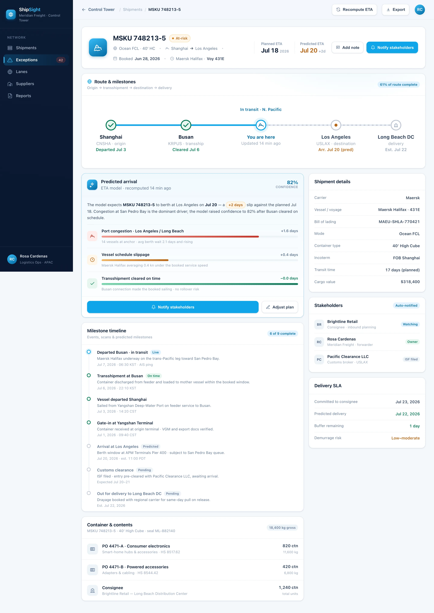

Track
Milestones from carriers, ports and EDI flow into one live timeline per shipment — ocean, air and ground, container to air waybill.
ShipSight is a supply-chain control tower for ocean, air and ground. It tracks every milestone, predicts each ETA with a confidence score, and flags the at-risk shipments — port congestion, customs holds — before they slip.
ShipSight attributes every predicted delay to the conditions behind it — so the arrival estimate always comes with a reason your team can act on.
Berth queues and terminal dwell at gateway ports — the single biggest driver of ocean ETA slip.
Documentation review, inspection and duty queries that stall cargo at the border.
Storm windows and re-routing that cut service speed or force a longer sailing.
Overbooked vessels that bump a container to the next sailing — days lost before departure.
Every predicted arrival decomposes into the drivers that produced it — with weights, not guesswork. Here's how one at-risk shipment breaks down.
ShipSight closes the loop from a raw carrier scan to the notification a planner should send — no chasing carriers or refreshing portals in between.
Milestones from carriers, ports and EDI flow into one live timeline per shipment — ocean, air and ground, container to air waybill.
An ETA model turns vessel telemetry, port dwell and customs signals into a live arrival estimate — with a confidence score, not false precision.
At-risk shipments surface before the ETA slips — with the driver named and a stakeholder notification ready to send in one click.
BuildspaceLabs built the MVP front end: a network-triage Control Tower board and a per-shipment detail view with a live route map.
Live on-time, at-risk and avg-delay KPIs sit above a status-coded, sortable shipments table — so the containers that need a human are always on top.

A live route map from origin through transshipment to destination, a milestone timeline, and a predicted ETA with its confidence and delay drivers — all on one shipment file.

Tracking, prediction and exception alerts consolidated into one visibility surface — nothing left in a carrier portal.
Live on-time, at-risk and avg-delay KPIs above a triage-ready, status-coded shipments table.
A live arrival estimate and confidence score per shipment, refreshed as it moves along its route.
Port congestion, customs holds, weather and rolled bookings flagged before the ETA slips.
Origin, transshipment, destination and delivery on one inline route with live vessel position.
Ocean, air and ground in one timeline — container, trailer and air waybill under a single reference.
Every predicted slip decomposed into named, weighted causes — congestion, customs, weather, slippage.
Status feeds are backward-looking. ShipSight turns the same signals into a forward ETA with its confidence — so the alert lands while there's still time to act.
Delivered as a production-quality MVP in an eight-week engagement.
We build AI-native products like ShipSight. Tell us how your freight moves and we'll show you what a predictive control tower looks like on your lanes and carriers.